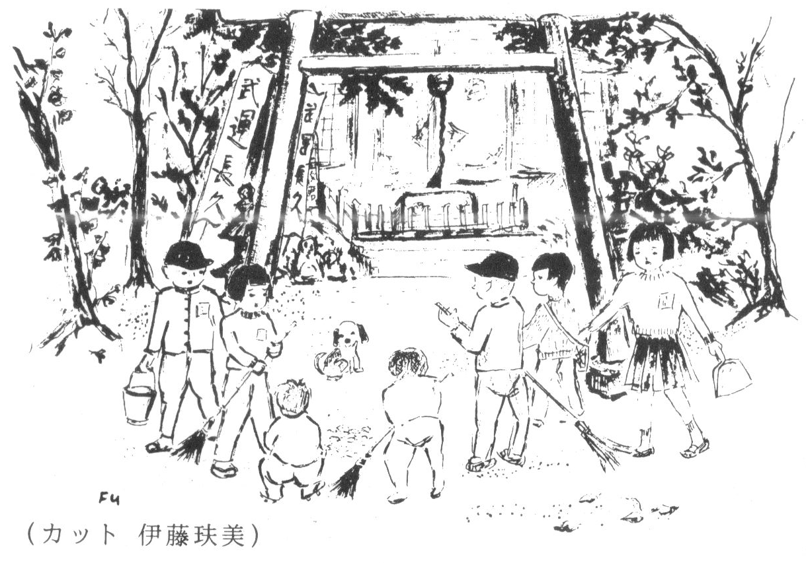

毎月一日は朝六時に八幡神社に集合し、六年生の号令で聖戦の勝利を祈願して拝礼、直ぐ掃除を始めます。 同級で「お嬢様」とニックネームのN子さんは遅刻の常習者で六年生に叱られ、「ねえやが起こしてくれなかった」とベソをかく少女でした。

この歌を歌い、箒(ほうき)を肩に帰ったものでした。
「本日八日未明、帝国陸海軍は西太平洋にて米英と戦闘状態に入れりと」
朝七時、ラジオから勇ましい音楽が流れてきました。アナウンサーの緊張した言葉に「ブルブルッ」と震えて終ったのは、常々教えられた武者震いだったのでしょうか。 大変な事になったと言う恐れがあったのでしょうか。 忘れる事のできない胸の高鳴りでした。
天皇陛下の開戦の詔勅により、八日は大詔奉戴日となり、神社への参拝、清掃が増えました。
私達の担任は師範を出たばかりのお姉さん先生。 元気のよい声で「ー・二・三・ 四、五・六・七・八」と、運動会の為の振り付けを教えて下さいます。 皆は何の体操か解らぬまま、八拍子の練習の日々でした。
いよいよ当日、流れる音楽に、「アレーッ?」と初めて軍艦マーチと解ったのです。 音楽に合せる練習が無しだったのでマゴマゴして「一・二・三・四、五・六・七・八」と口の中で言いつゝ手足を動かした運動会のーこまでした。
少国民の勤労奉仕の一つに草刈りがありました。
河原に近い試験場の雑草を、一列に並び刈り進みます。
仲良しのM子さんの姿が何時の間にか見えません。 どうしたのかと思っていましたら、左手に包帯をして帰ってきました。 「指を切ってしまったの。教室でお勉強していたいナァ」と小さい声でささやきました。
県とY新聞社の主催で、国民学校(小学校)生徒の絵画展が開かれ、各学校から聖戦を題材にした絵が数多く展示されました。
私の陸軍病院慰問の絵が入賞、朝礼で校長先生からお褒めの言葉と共に賞状を戴きました。 看護婦さんの制服と白い大きい帽子、病室の白衣の兵隊さんを一所懸命に描いた、いじらしい意気込みを懐かしく思います。
Ｅ子さんは朝礼が長びくと、必ず倒れてしまうひ弱な子でしたが、学芸会で「愛馬花嫁」を踊る事に決まりました。
御振袖を着て、舞台に立ったＥ子さんの大人びた美しさに驚嘆し、皆で大拍手を致しました。
忘れてしまいたい事、忘れてはならない事、色々とあった非常時の遠い日々、S氏の姓名(フルネーム)をはっきり覚えているのは、衝撃的な一言で始まったからです。
初めに女性歌手がモンペ姿で、「愛国の花」を歌いました。
次は「めんこい仔馬」でした。
終りに「椰子の実」で講堂の全員が、
声を合わせて歌い、久し振りにほっとした穏やかな安らぎを感じて居りましたが…。
壇上に上がったS氏が、右手を聴講の男子生徒に向け指差し、開口一番、「君達は国の為に死になさい」と小柄な身体を背伸びする様にして仰言ったのです。
「進め一億 火の玉だ」の時局の流れは解っていても、急に現実に戻されてしまった一瞬でした。
S氏には娘が一人だけで息子は居りませんでしたから、男の子に対する気持ちは充分とは言えない状態だったのかと、今は考えられますが、その一人娘のお嬢様がじっと下を向いて、お雛様の様な顔をこわばらせていたのを隣の席にいた私は忘れては居りません。
当時、開拓義勇軍や少年飛行兵も、国民学校(小学校)を卒業した少年達が自分から志願して行きました。 隣家のお兄ちゃんのＥ君も、バンザイの声に送られ満州(北中国)へ行ったのです。
戦後、彼は不良少年と陰口を言われるコワイ男の子になりました。
大東亜共栄圏の為の聖戦と信じて命をかけてきた事が、一体何だったのか、その空しさにキレてしまった行動が、現代の十代の少年達に重なって暗澹(あんたん)たる思いです。
二十一世紀に巣立つ若者達が、現在の上べだけの平和に安住せず、しっかり世の中を見る事が出来て、日本人である事を誇りに思える様な国を作って行かれる事を願って、思い出の記を終りに致します。